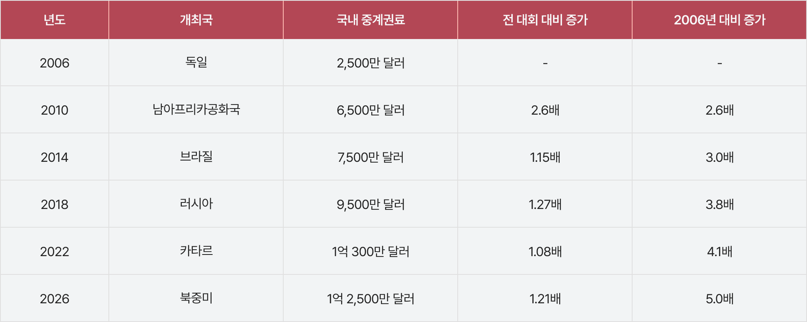
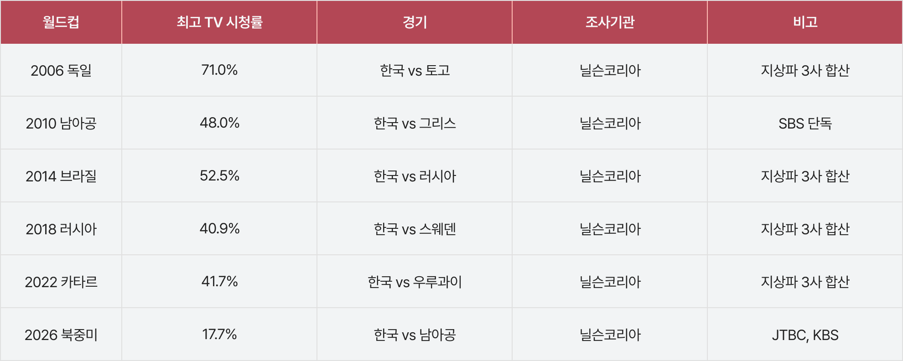
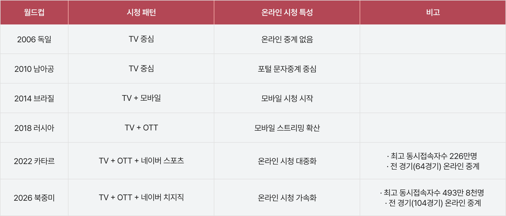
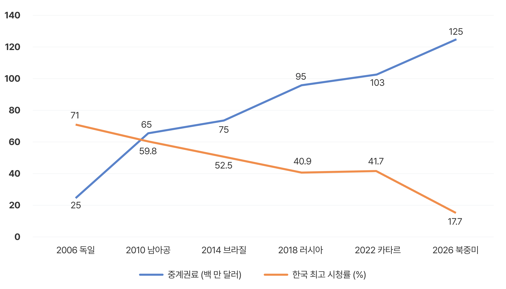
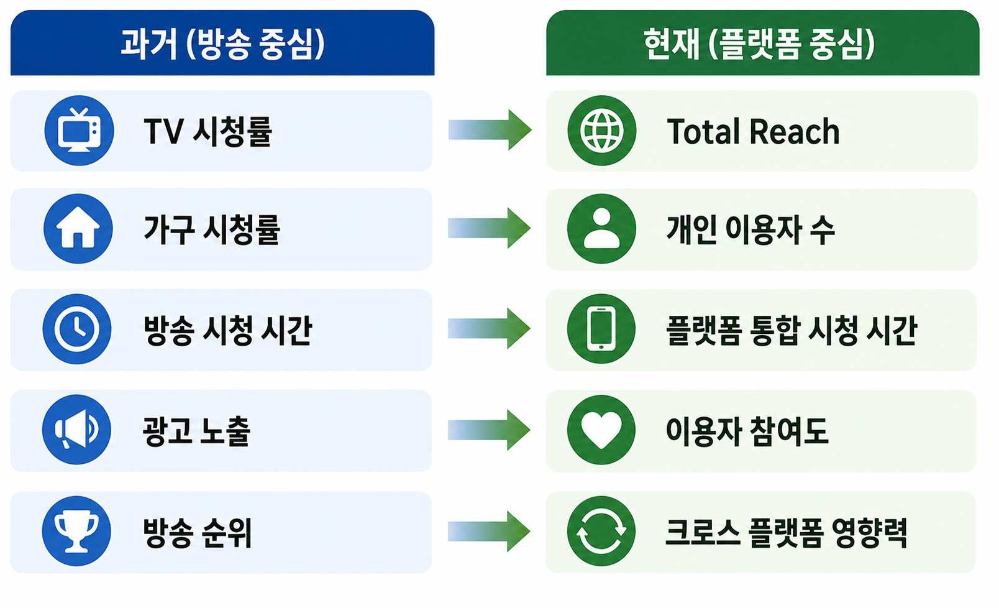

2026 북중미 월드컵은 FIFA 월드컵 역사상 최대 규모로 개최됐다. 참가국은 기존 32개국에서 48개국으로 확대됐고, 경기 수 역시 64경기에서 104경기로 늘어났다. 이에 따라 FIFA가 판매하는 월드컵 중계권 가치도 사상 최고 수준으로 상승했다. 국내 방송사들은 다시 한번 막대한 중계권료 부담을 안게 됐다. <표 1>에서 볼 수 있듯 국내 방송사들이 부담하는 월드컵 중계권료는 2000년대 중반 수천만 달러 수준에서 최근 1억 달러를 넘어섰다. 2006년 2,500만 달러였던 중계권료는 2026년 1억 2,500만 달러로 치솟아 20년 만에 약 5배 증가한 것을 알 수 있다.

<표 1> 월드컵 경기 국내 중계권료 변화 (2006년~2026년)
(출처 : 금빛나(2026.3.23.). ‘월드컵 D-80’ JTBC, 지상파와 중계권 협상 난항에 “큰 적자 감수...최종안 제시”. <매일경제>. 기사 내용의 중계권료 자료 바탕으로 자체 정리함.)
국제 스포츠 이벤트는 오랫동안 방송사의 대표적인 킬러 콘텐츠였다. 특히 월드컵은 짧은 기간 동안 대규모 시청자를 확보할 수 있는 드문 미디어 이벤트로 높은 광고 수익과 브랜드 가치 상승 효과를 제공해 왔다. 방송사 입장에서는 막대한 비용을 지불하더라도 쉽게 포기하기 어려운 콘텐츠인 셈이다.
OTT 시대에 들어서면서 스포츠 중계권의 의미는 더욱 커졌다. 모바일 스트리밍과 OTT 서비스가 확산되면서 스포츠 시청의 중심이 TV에서 디지털 플랫폼으로 이동하기 시작했기 때문이다. 정보통신정책연구원(KISDI)은 스포츠 중계권 확보가 OTT 사업자의 이용자 확대를 견인하는 핵심 요인이라고 분석했다. 스포츠 콘텐츠가 단순한 시청 콘텐츠를 넘어 플랫폼 성장과 이용자 확보를 이끄는 핵심 자산으로 기능하고 있다는 것이다.
미디어 환경의 변화 속 월드컵의 경쟁력이 여전히 유지되는 이유는 스포츠가 가진 ‘라이브 콘텐츠’의 특성에 있다. 드라마나 예능은 언제든 다시 볼 수 있지만 스포츠는 결과가 확정되는 순간의 실시간성이 핵심 가치다. 승부가 결정되는 장면을 놓치지 않으려는 시청자의 욕구는 다른 콘텐츠로 쉽게 대체되지 않는다. 실제로 국가대표 경기나 주요 빅매치가 열리는 날이면 SNS 실시간 반응, 포털 검색량, 온라인 커뮤니티 활동이 폭발적으로 증가한다. 2022년 카타르 월드컵 당시 구글 연말 검색 트렌드에서도 ‘스포츠’, ‘축구’, ‘월드컵’ 관련 검색어가 급증한 것으로 나타났다.
이는 월드컵이 단순한 방송 프로그램을 넘어 디지털 공간 전반의 관심과 참여를 이끄는 콘텐츠임을 보여준다.
이러한 특성 때문에 글로벌 미디어 기업과 플랫폼 사업자들은 스포츠 중계권 확보 경쟁에 적극적으로 뛰어들고 있다. 결국 스포츠 콘텐츠의 희소성과 실시간성이 중계권 가치 상승을 이끌고 있으며, 월드컵 중계권료가 지속적으로 상승하는 이유도 여기에 있다.
<표 2>는 지난 20년간 한국 대표팀 경기의 최고 TV 시청률을 보여준다. 2006년 독일 월드컵 당시 최고 시청률은 71.0%에 달했지만 이후에는 대체로 40~50% 수준에 머물렀다. 특히 2026년 북중미 월드컵에서는 17.7%까지 하락하며 역대 최저 수준을 기록했다. 다만 이는 경기 시간대와 중계 플랫폼 분산 등 복합적인 요인이 반영된 결과로 해석할 필요가 있다. 그럼에도 불구하고 TV 시청률이 전반적으로 하락 추세를 보이고 있다는 점은 분명하다.

<표 2> 월드컵 경기 한국 대표팀의 최고 시청률 (2006년~2026년)
(참고 : 각 대회별 최고 시청률은 한국 대표팀 경기 기준이며, 중계권 구조 변화에 따라 방송사 합산 기준이 일부 상이함. 자료는 닐슨코리아 및 뉴스 보도자료 종합함. )
그러나 TV 시청률만으로 월드컵의 실제 영향력을 판단하기는 어렵다. 같은 기간 온라인과 모바일을 통한 스포츠 소비는 오히려 빠르게 증가했기 때문이다. <표 3>과 같이 2006년 독일 월드컵 당시만 해도 온라인 중계는 사실상 존재하지 않았다. 2010년 남아공 월드컵에서는 포털 문자중계가 등장했고, 2014년 브라질 월드컵부터 모바일 시청이 본격화됐다. 이후 2018년 러시아 월드컵을 거치며 OTT 기반 스트리밍이 확산됐고, 2022년 카타르 월드컵에서는 OTT와 네이버 스포츠를 중심으로 온라인 시청이 대중화됐다. 실제로 2022년 카타르 월드컵에서 네이버 스포츠는 전 경기 온라인 중계를 통해 누적 시청자 1억 2,117만 명을 기록했다. 특히 한국-가나전에서는 동시 접속자 수가 226만 명을 넘어섰다.
이는 디지털 플랫폼이 새로운 스포츠 중계 창구로 자리 잡고 있음을 보여준다. 또한 2026년 북중미 월드컵에서는 네이버의 스트리밍 플랫폼 치지직(CHZZK)이 104개 전 경기를 생중계했다. 한국-남아공전에서는 최고 동시 접속자 수 493만 8천 명을 기록했으며, 월드컵 관련 클립 콘텐츠 누적 재생 수는 3억 1천만 회를 넘어섰다.
이는 스포츠 콘텐츠 소비가 TV 중심에서 디지털 플랫폼 중심으로 이동하고 있음을 보여주는 상징적인 사례이다.

<표 3> 월드컵 경기 시청 패턴 변화 (2006년~2026년)
(참고 : 국내에서 월드컵 온라인 시청 데이터를 공식적으로 공개하는 사업자는 네이버이기 때문에 해당 보도자료를 종합함. 기타 OTT 플랫폼은 구체적인 월드컵 자료를 제공하지 않고 있어 제외함.)

[그림 1] 국내 월드컵 중계권료와 TV 시청률 추이 비교 (2006년~2026년)
(출처 : 중계권료는 <표 1>, 시청률 데이터는 <표 2>를 참조하여 저자 재구성)
결국 [그림 1]은 월드컵을 둘러싼 흥미로운 역설을 보여준다. TV 시청률은 하락하고 있지만 중계권료는 꾸준히 상승하고 있다. 전통적인 시청률 기준으로만 보면 월드컵의 가치가 감소한 것처럼 보이지만, 실제 시장은 정반대로 움직이고 있다. 방송사와 플랫폼 사업자들은 더 높은 비용을 지불하면서도 월드컵 중계권 확보 경쟁을 벌이고 있는 것이다. 이는 TV 시청률 하락이 곧 스포츠 콘텐츠 소비 감소를 의미하지 않기 때문이다.
특히 2022년 카타르 월드컵은 이러한 변화가 본격적으로 드러난 대회였다. OTT, 모바일 스트리밍, 포털 중계, SNS 클립 영상 등 다양한 경로를 통한 시청이 확산되면서 TV 중심의 시청 구조가 다중 플랫폼 구조로 전환되기 시작했다. 대표팀 경기나 주요 빅매치가 열릴 때마다 온라인 플랫폼에는 수백만 명 규모의 동시 접속자가 몰리고, 관련 영상 조회 수도 급증한다. SNS와 온라인 커뮤니티 역시 경기 전후로 활발한 참여를 보여준다. 특히 젊은 세대는 경기 전체를 시청하기보다 주요 장면을 실시간 클립이나 하이라이트 영상으로 소비하는 경향이 강하다. 실제로 네이버는 생중계 시청자의 약 68%, 승부예측 참여자의 약 73%가 MZ세대 또는 그보다 젊은 이용자라고 밝혔다.
이러한 상당수 스포츠 이용 행태는 기존 TV 시청률 조사에 반영되지 않는다. 따라서 TV 시청률 하락을 스포츠 콘텐츠의 인기 하락으로 해석하기는 어렵다. 시청자는 사라진 것이 아니라 TV에서 모바일과 디지털 플랫폼으로 이동한 것이다. 과거 거실 TV가 시청의 중심이었다면, 오늘날에는 TV·OTT·모바일·SNS가 함께 작동하는 다중 플랫폼 시청 구조가 형성되고 있다.
이러한 변화는 월드컵만의 현상이 아니다. 방송 콘텐츠 전반에서 나타나는 미디어 소비 구조의 변화와 맞닿아 있다. 과거 스포츠 경기를 시청한다는 것은 곧 TV를 시청한다는 의미였다. 그러나 스마트폰과 OTT, 온라인 동영상 플랫폼이 일상화되면서 시청 행태는 근본적으로 달라졌다. 특히 젊은 세대를 중심으로 TV보다 모바일 기반 소비 비중이 높아지고 있으며, 경기 전체를 시청하기보다 하이라이트 영상, 숏폼 콘텐츠, 실시간 알림, 문자중계 등을 통해 핵심 장면만 소비하는 이용자도 빠르게 늘고 있다.

[그림 2] 스포츠 콘텐츠 가치 평가 기준의 변화: 시청률에서 총도달률(Total Reach)로
(출처 : 저자 정리)
이 같은 변화는 스포츠 콘텐츠의 가치를 평가하는 기준에도 영향을 미치고 있다. 과거 방송 산업의 핵심 성과지표(KPI)는 TV 시청률과 광고 노출이었다. 그러나 OTT와 모바일 중심의 미디어 환경에서는 총도달률(Total Reach), 플랫폼 통합 시청 시간, 이용자 참여도(Engagement), 크로스 플랫폼 영향력(Cross-platform Impact) 등이 새로운 평가 기준으로 부상하고 있다. 월드컵과 같은 메가 스포츠 이벤트 역시 더 이상 TV 시청률만으로 가치를 설명하기 어려운 시대에 접어든 것이다.
이에 따라 글로벌 스포츠 산업은 시청률 중심 평가 체계에서 ‘통합 시청 데이터(Total Audience)’ 중심 평가 체계로 이동하고 있다. 과거 방송사가 중계권 구매 여부를 판단할 때 가장 중요하게 고려한 지표는 TV 시청률이었다. 반면 오늘날 플랫폼 사업자들은 OTT 이용자 수, 누적 시청 시간, 동시 접속자 수, 하이라이트 조회수, SNS 언급량, 이용자 참여도 등을 종합적으로 고려한다. 이제 중요한 질문은 “몇 퍼센트가 TV로 시청했는가”가 아니라 “얼마나 많은 이용자가 다양한 플랫폼에서 콘텐츠를 경험했는가”로 바뀌고 있다.
이러한 변화는 스포츠 중계의 유통 전략에도 영향을 미치고 있다. 실시간 경기 중계뿐 아니라 하이라이트, 숏폼, 데이터 서비스, 소셜미디어 콘텐츠를 결합한 다층적 유통 구조가 새로운 표준으로 자리 잡고 있다. 하나의 스포츠 이벤트를 다양한 형태의 콘텐츠로 재가공해 이용자 접점을 확대하고 수익을 창출하는 방식이다. 실제로 글로벌 미디어 기업들은 스포츠 중계를 단순한 방송 프로그램이 아니라 플랫폼 체류 시간을 늘리고 이용자 데이터를 확보하는 핵심 자산으로 활용하고 있다. 스포츠 콘텐츠는 라이브 시청 수요가 높고 이용자 참여를 유도하는 효과가 크기 때문이다.
결국 스포츠 콘텐츠의 경쟁력은 더 이상 TV 시청률만으로 설명되지 않는다. 중요한 것은 얼마나 많은 이용자에게 도달했는지, 그리고 얼마나 적극적인 참여를 이끌어냈는가이다. 월드컵 역시 TV·OTT·모바일·소셜미디어를 아우르는 플랫폼 콘텐츠로 진화하고 있으며, 스포츠 산업의 경쟁 기준도 ‘시청률’에서 ‘총도달률(Total Reach)’로 이동하고 있다. 월드컵 중계권료가 계속 상승하는 이유 역시 바로 이러한 플랫폼 가치와 이용자 도달력에 있다.
월드컵 중계권료 상승과 TV 시청률 하락이라는 역설은 월드컵의 인기 감소가 아니라 미디어 소비 방식의 변화를 보여준다. 국민들이 월드컵을 외면한 것이 아니라, 월드컵을 시청하는 공간이 거실 TV에서 모바일과 OTT, 소셜미디어로 확장된 것이다.
월드컵은 여전히 국민 콘텐츠다. 다만 과거의 월드컵이 ‘TV 시청률 50%의 콘텐츠’였다면, 오늘날의 월드컵은 TV·OTT·모바일·SNS를 아우르는 ‘통합 시청 콘텐츠’로 진화하고 있다. 중계권료가 지속적으로 상승하는 이유도 여기에 있다. 스포츠 콘텐츠의 가치가 단순한 TV 시청률이 아니라 다양한 플랫폼에서의 도달 범위와 이용자 참여를 통해 평가되기 시작했기 때문이다.
앞으로 국제 스포츠 중계권의 가치는 시청률보다 총도달률(Total Reach)과 이용자 참여도(Engagement)를 중심으로 평가될 가능성이 높다. 결국 스포츠 콘텐츠 산업의 경쟁력은 얼마나 많은 이용자에게 도달하고, 얼마나 깊은 참여를 이끌어내느냐에 달려 있다. 월드컵 중계권료와 TV 시청률의 엇갈린 흐름은 스포츠 콘텐츠의 가치가 사라진 것이 아니라 새로운 방식으로 측정되고 있음을 보여주는 상징적인 사례이다.
- 강애란(2022.11.25). [월드컵] 방송3사 시청률 40%대…역대 최고는 74.7%. <연합뉴스>.
- 구글코리아 블로그(2022.12.7). Google Year in Search 2022 : 구글 올해의 검색어로 되돌아보는 2022년, 한국과 세계는 무엇을 주목했을까?.
- 금빛나(2026.3.23). ‘월드컵 D-80’ JTBC, 지상파와 중계권 협상 난항에 “큰 적자 감수...최종안 제시”. <매일경제>.
- 네이버 공식 보도자료(2022.12.21). 네이버, ‘2022 카타르 월드컵’으로 차세대 커뮤니티 가능성 증명했다.
- 노희윤(2024). OTT 사업자의 스포츠 중계권 확보에 따른 이용자 수 추이 분석 : 월간 이용자 수, 유입률, 이탈률 분석을 중심으로. <KISDI Perspectives>, 2024 June No.3, pp. 1-31.
- 오규진(2022.12.21). 네이버 스포츠 “월드컵 누적 시청자 수 1억2천만 명 돌파”. <연합뉴스>.
- 장진리(2026.6.26). [월드컵] 남아공전 시청률 KBS 10.7%로 3연승. <연합뉴스>.
- 한상용(2026.6.25). [월드컵] 남아공전 494만명 몰렸다…치지직 동시접속 최고 기록. <연합뉴스>.